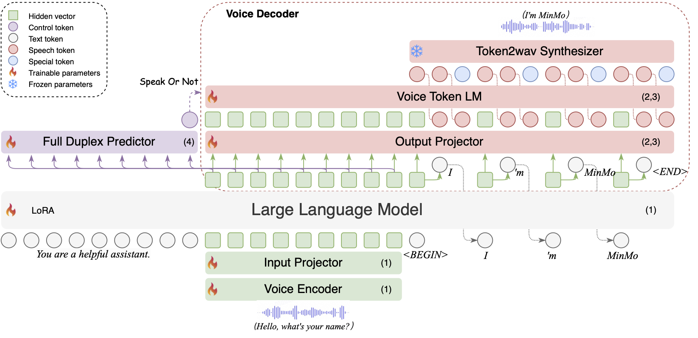
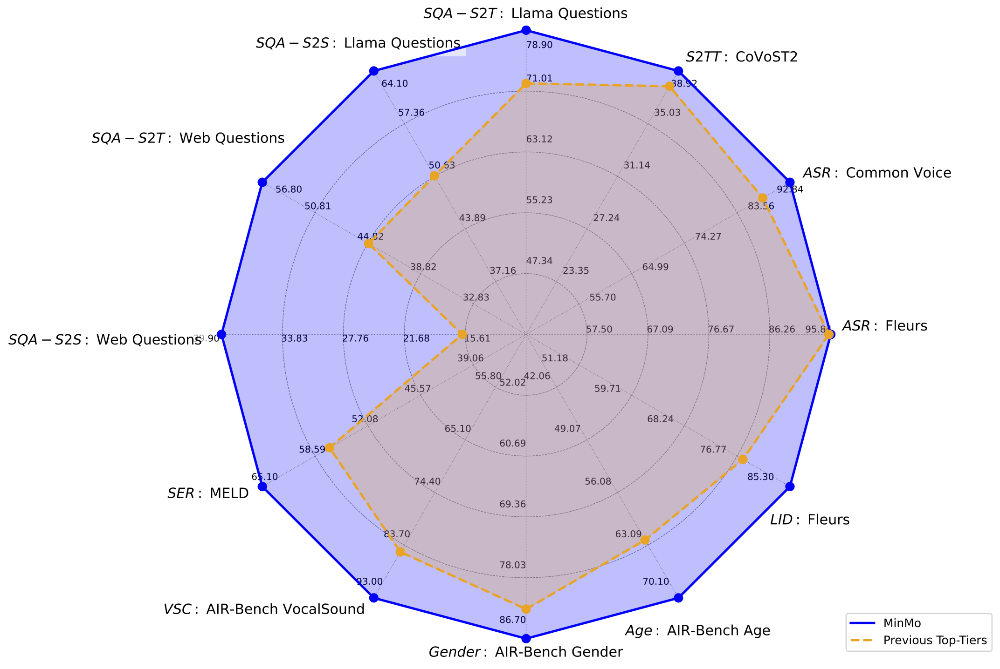

MinMo: A Multimodal large Language Model for Seamless Voice Interaction
FunAudioLLM Team
Tongyi Lab, Alibaba Group
Abstract: Recent advancements of large language models (LLMs) and subsequent multimodal speech-text models have provided promising foundation technologies for achieving seamless voice interactions, that is, real-time, natural, smooth, and human-like voice conversations between the user and the system. Prior works of speech-text multimodal models for voice interactions can be roughly categorized into native and aligned models. Native multimodal models simultaneously model end-to-end understanding and generation of both speech and text with a single framework; however, they face the challenges of drastic discrepancy between speech and text sequence lengths, insufficient speech pre-training, and catastrophic forgetting of knowledge of text LLMs. Aligned multimodal models are more successful at maintaining capabilities of text LLMs; yet existing models are usually trained on small-scale speech data, investigated on a limited set of speech tasks, and lack systematic exploration of instruction-following capabilities for rich and nuanced speaking styles. In this work, we introduce MinMo, a Multimodal Large Language Model with approximately 8B parameters for seamless voice interaction. We address the main limitations of prior aligned multimodal models. We train MinMo through multiple stages of speech-to-text alignment, text-to-speech alignment, speech-to-speech alignment, and duplex interaction alignment, on 1.4 million hours of diverse speech data and a broad range of speech tasks. After the multi-stage training, MinMo achieves state-of-the-art performance across various benchmarks for voice comprehension and generation while maintaining the capabilities of text LLMs, and also facilitates full-duplex conversation, that is, simultaneous two-way communication between the user and the system. Moreover, we propose a novel and simple voice decoder that outperforms prior models in voice generation. The enhancedinstruction-following capabilities of MinMo supports controlling speech generation based on user instructions, with various nuances including emotions, dialects, and speaking rates, and mimicking specific voices. For MinMo, the speech-to-text latency is approximately 100ms, full-duplex latency is approximately 600ms in theory and 800ms in practice.

- State-of-the-art (SOTA) Performance: MinMo achieves current SOTA performance in benchmarks such as voice dialogue, multilingual speech recognition, multilingual speech translation, emotion recognition, speaker analysis, and audio event analysis, while also ensuring that the capabilities of the text large model remain largely intact.
- Instruction-Controlled Audio Generation: MinMo supports end-to-end voice interaction that follows user instructions to control the emotion, dialect, and speaking style of the generated audio, as well as mimicking specific voice tones, with a generation efficiency of over 90%.
- Low-Latency Duplex Voice Interaction: MinMo supports full-duplex voice interaction, enabling smooth multi-turn conversations and preventing interruptions from background noise. The speech-to-text latency is approximately 100ms, full-duplex latency is approximately 600ms in theory and 800ms in practice.
Contents
Performance overview of benchmarks

Figure 3. Performance comparison between our MinMo(∼8B parameters) and top-tier speech-text multimodal models, including Moshi(7B) (Défossez et al., 2024), Freeze-Omni(7.5B) (Wang et al., 2024b), GLM-4-Voice(9B) (Zeng et al., 2024b), SeamlessM4T Large v2(2.3B) (Communication et al., 2023), NExT-GPT (Wu et al., 2024a), speech-to-text model Qwen2-Audio(∼8B) (Chu et al., 2024), Whisper-large-v3(1.55B) (Radford et al., 2023a), and others. We demonstrate capabilities of MinMo on automatic speech recognition (ASR), speech-to-text translation (S2TT),Spoken question answering (SQA) encompasses both speech-to-text (S2T) and speech-to-speech(S2S), vocal sound classification (VSC), speech emotion recognition (SER), language identification (LID), age recognition and gender detection. ASR is evaluated using 1-WER%, with Fleurs & Common Voice results are averaged over 10 languages (zh, en, ja, ko, yue, de, fr, ru, es, it). S2TT is evaluated using BLEU, with CoVoST2 results averaged over en2zh, en2ja, zh/ja/de/fr/ru/es/it2en translation directions. SQA is eavaluated using Accuracy. SER is evaluated using Weighted Accuracy. MinMo surpasses the previous SOTA models on all these tasks.
VoiceChat Demo
Demo1: Chat with MinMo in English about movies.
Demo2: Chat with MinMo in Chinese while controlling MinMo's accent (Sichuan dialect, Cantonese, etc.) during the conversation.
Demo3: Chat with MinMo in Chinese, instructing MinMo to engage in emotional interactions and role-playing.
Disclaimer
The content provided above is for academic purposes only and is intended to demonstrate technical capabilities. Some examples are sourced from the internet. If any content infringes on your rights, please contact us to request its removal.